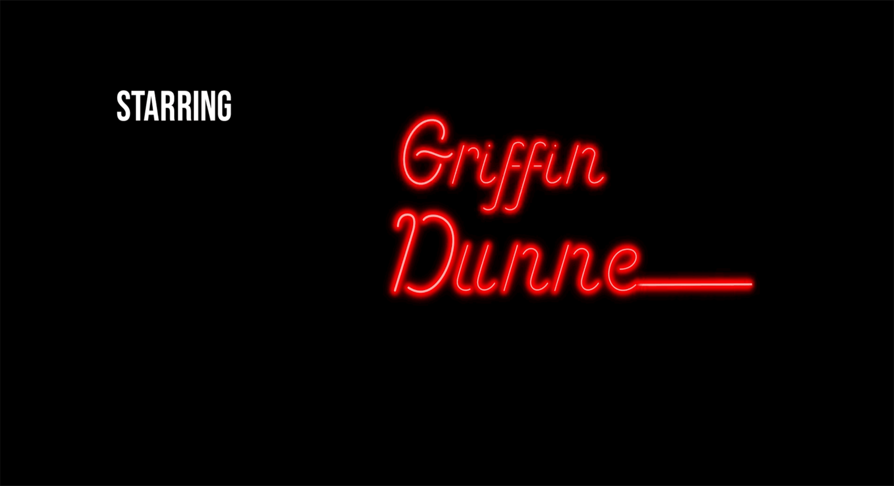
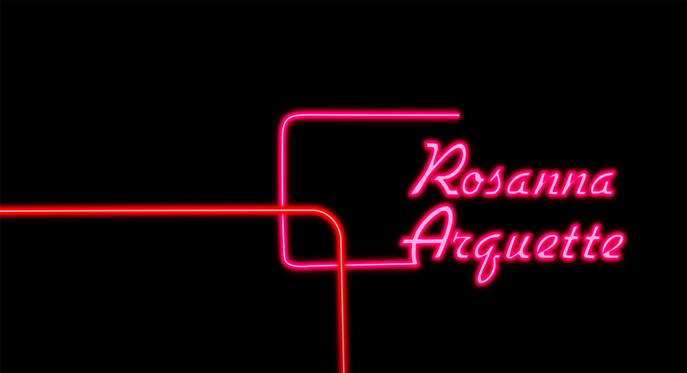
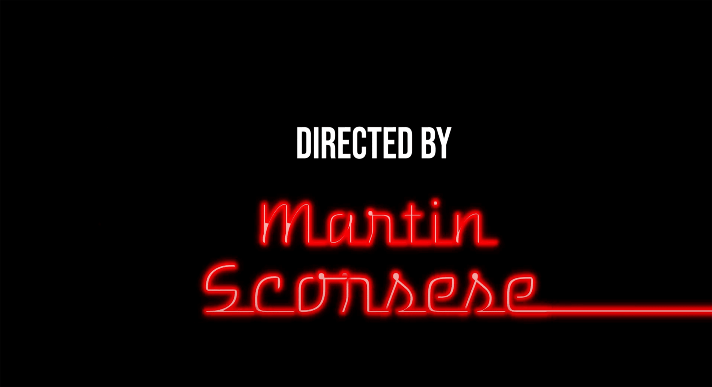
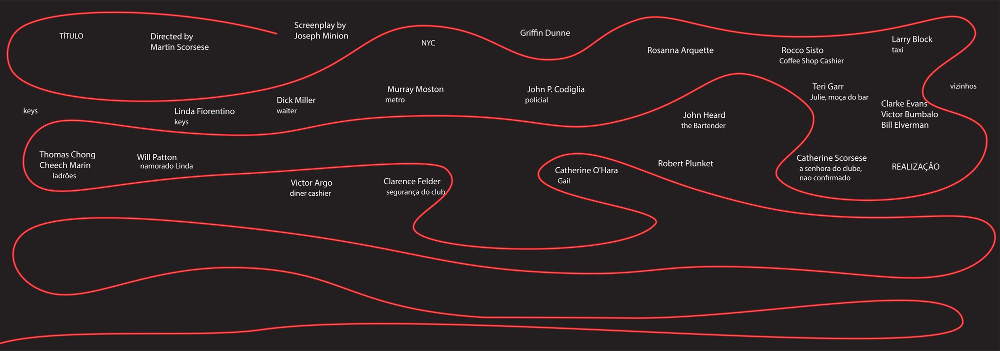
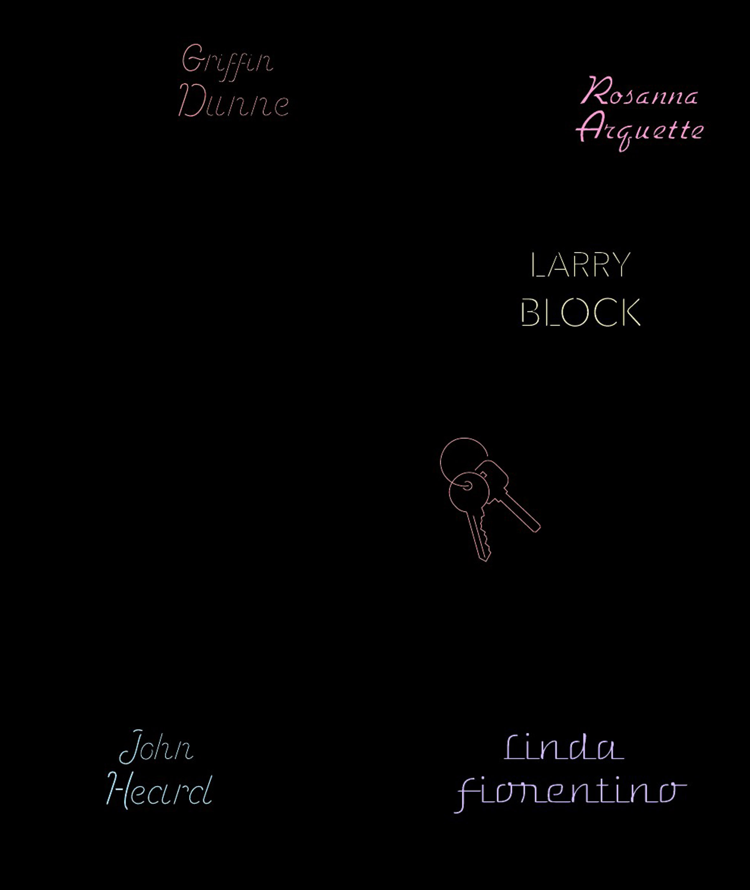

What if opening credits weren’t just an introduction, but an emotional prologue?
All in a Chain is an answer to that. Working with After Hours (Scorsese, 1985), our challenge was to translate Paul Hackett’s chaotic, anxiety-ridden world into graphic motion language, without relying on a single frame of actual footage.
The solution was to turn key narrative objects, a $20 bill and a cardboard sculpture, into animated protagonists. A red LED line acts as a through-line, mapping the character’s impulsive choices and tracing the routes of the women who cross and reshape his path.
Visually, we worked with the tension between escapism and exhaustion: typography inspired by the 1930s, the visual noise of 1980s Manhattan, neon lights, subway systems, the dead of night. Sound design reinforces the rhythm of the sequence, making each cut a deliberate narrative decision.
The project taught me that motion design is, above all, editing — deciding what to show, when, and for how long, so that form carries the same weight as content.



Process
The red line went through a few rounds of testing before reaching the version imported into After Effects. The first test explored movement and experimented with the ordering of the names; the final pass locked in the colour palette and typography used throughout the piece.


© ellen damazio, 2026 — designed & coded